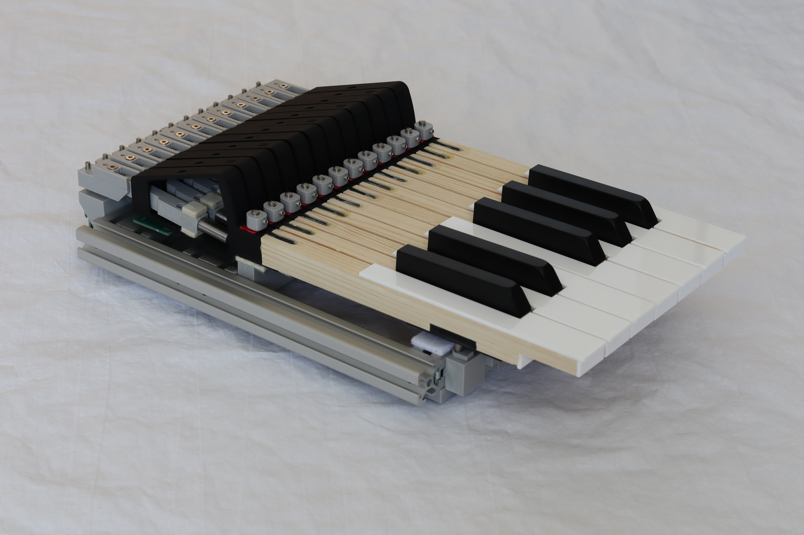
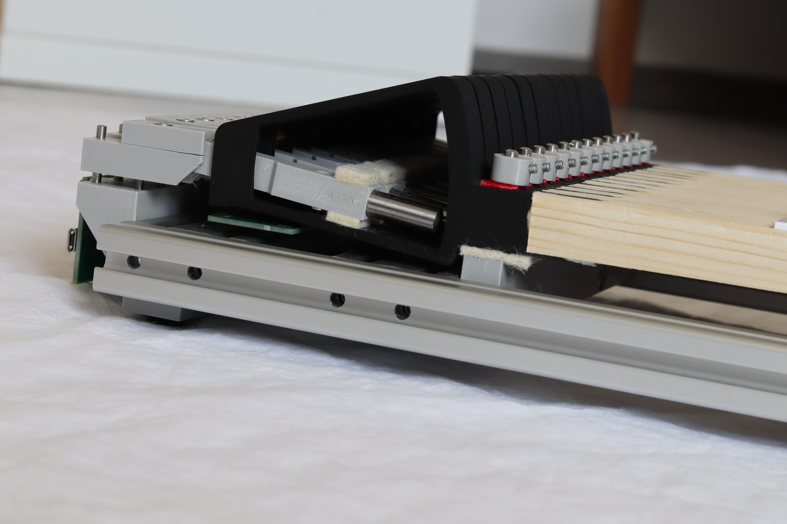
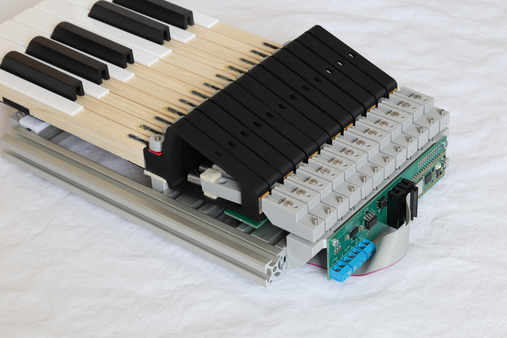

Kinetic Organ Keyboard
Transparent pricing & documentation. We believe in openness — our price, user manuals, and technical documentation are all published here for you to review directly, no sign-up or inquiry required.

{kind=link}
{kind=link}
Key Features
| Range | 61 keys (5 octaves) |
| Dimensions | 890 × 355 × 85 mm |
| Weight | 7.3 kg |
| Magnetic Druckpunkt | Adjustable 70–200 g |
| Key travel | Adjustable 9–11 mm |
| Kinetic feel levels | The weight of the lever arms can be adapted to individual needs. Choose your preferred lighter or heavier action |
| MIDI output | Velocity-sensitive MIDI (includes HALL-SCANNER64 module) |
| Smart trigger-point calibration | After adjusting key travel and Druckpunkt, individual per-key trigger points no longer need to be set with screws. Calibration is performed via the HALL-SCANNER64 WiFi settings. |
What is a kinetic keyboard?
A kinetic keyboard differs from ordinary MIDI keyboards in that each key has its own lever mechanism with a weight. When you press a key, you first feel a light free travel, then the Druckpunkt (a point simulating valve opening), followed by inertial resistance that depends on the speed of the press — just like a real mechanical organ action. It is this inertial force component that greatly affects the feel of playing and the practice of proper technique. Traditionally, organ keyboards only simulate the Druckpunkt, but not the inertial response. Real mechanical organ actions, however, are characterized precisely by their considerable inertia, so simulating only the Druckpunkt is in principle insufficient.
Custom versions on demand
Upon request we can produce keyboards in modified configurations — for example with a smaller range (fewer keys), with different keytop materials (exotic wood, etc.), or with different front key profiling.
Try it out
Serious inquirers can borrow 1-octave keyboard models for testing (against a deposit). You can verify whether the kinetic feel suits you and choose the ideal level of adjustment. The keyboard model is provided including MIDI electronics, so you can verify full functionality and compatibility. Keys C–F have a higher weight, keys F♯–B a lower weight.
  
{kind=link}
{kind=link}
{kind=link}
For customers from Germany, keyboards are available through our exclusive partner: pausch-e.com
Price from: 1 820 EUR (excl. VAT)